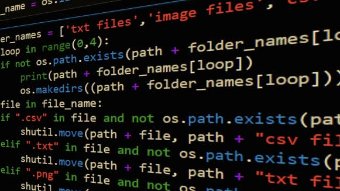
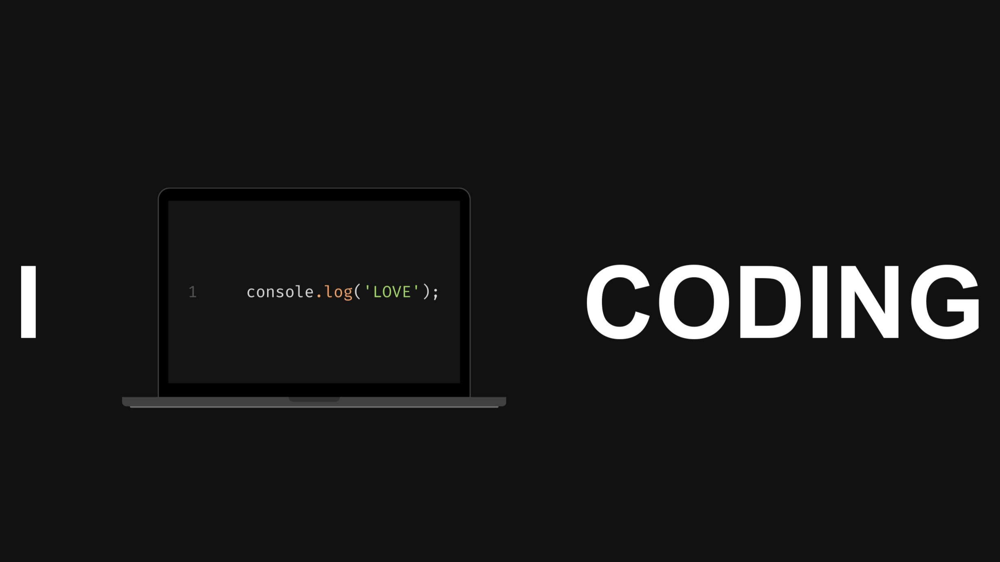

In my senior year at OU, I held the role of a Project Manager in my Field Project class. Collaborating with a team of students and working closely with a client, our responsibilities included conducting analyses, proposing designs, evaluating alternatives, developing prototypes, formulating recommendations, and presenting findings.
Collaborating with a team of students, we developed a database for a fictional organization hosting a clothing and book drive. The client needed a comprehensive database to track data related to the drive, including information about the students benefiting, the volunteers involved, and the items distributed.
This Power BI dashboard displays information taken from a Data Proffesionals survey.

The Tableau dashboard displays information about Airbnbs in Seattle, WA.

I have done three Python Projects, a BMI calculator, a file sorter, and a webs scraping project.

I got the foundational HTML/CSS template for this website from HTML5 UP and then customized it to my liking, transforming it into the website it is now! Making this portfolio website has been so much fun and has reminded me that I ❤ to code!